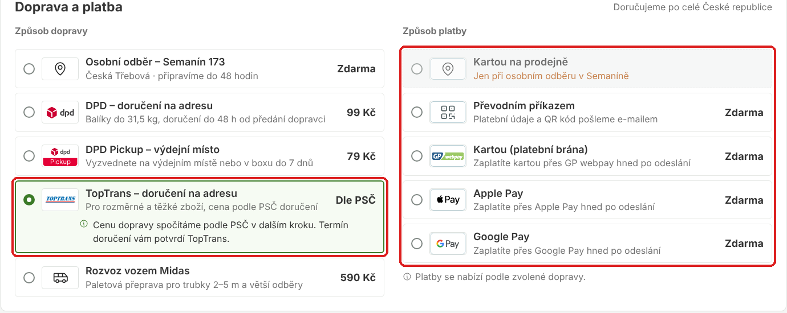
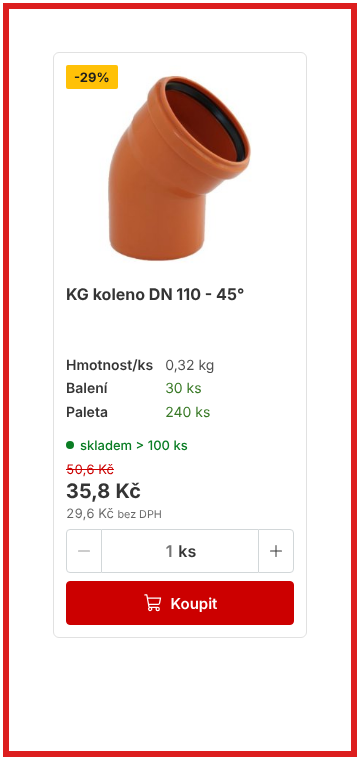
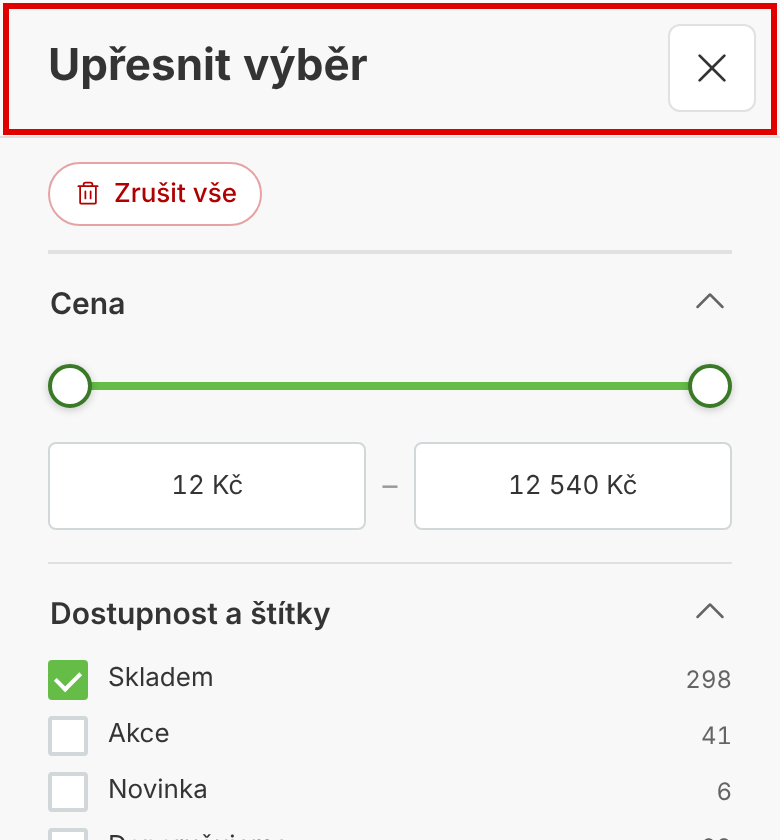
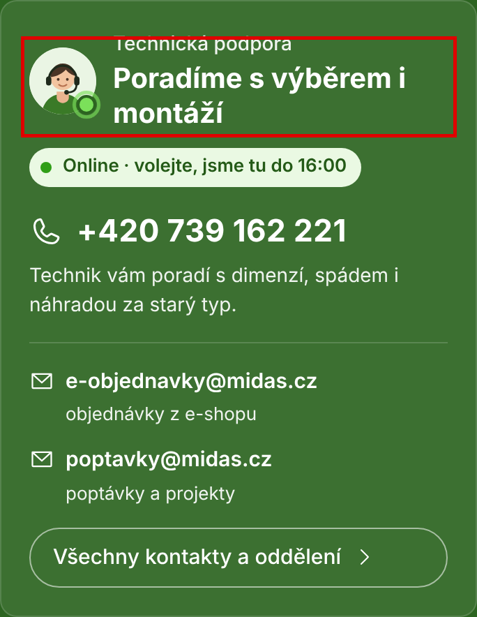

Přehled synchronizací prototypu z Claude Design do repozitáře. Nejnovější nahoře. Zpět na přehled stránek
Varianty hero, menu a USP, nová hlavička na tabletu a mobilu, úpravy objednávky
Souhrn úprav od posledního syncu:
Prezentace: přepínač je kulaté plovoucí ikonové tlačítko (v objednávce nad spodní lištou). Nové volby: Hero A / B / C, Menu kategorií A / B, USP A / B. Hero C automaticky zapne menu B.
Hero B a C: B je jednoduchý karusel (záložky Novinky, Okapový systém, Systém KG 2000, Akční set; na mobilu přes celou šíři, fotka nahoře). C je karusel přes celou šíři okna, napojený bez mezery na menu, fotka vpravo s plynulým přechodem.
Menu B: zelený pás přes celou šíři, položky v kontejneru se stejným odsazením textu, rozbalovací panel přes celou šíři hned pod pásem. Na tabletu také přes celou šíři.
Hlavička: hamburger menu už pod 1000 px, plynulé rozbalování podkategorií. Telefon i na tabletu a mobilu (pod 420 px skrytý). AZ na mobilu jako plné tlačítko. Obtažení tlačítek na tabletu a mobilu, mezera 8 px mezi účtem a košíkem.
Vyhledávání: placeholder „píše“ ukázkové dotazy. Našeptávač je přes celou šíři hned pod bílou hlavičkou, tlačítka „Zobrazit všechny“ jsou sjednocená, Koupit je ikonové s hoverem.
Úvod: USP B (přes celou šíři, spodní oddělovač), ikona české vlajky, nadpis H1 doleva s odkazem na O nás, nadpis v megamenu 1,5×.
Karta produktu a detail: po přidání „V košíku“ černě s počtem kusů v červeném kolečku, v řádkovém výpisu ikona checkboxu. Popup skladovosti nad sousedními kartami. Galerie na detailu je celá bílá.
Kategorie: hlavička výpisu na jemně šedém pásu přes celou šíři.
Informační stránky a patička: obsah přes celou šíři, Doprava s logy dopravců a plateb (tooltipy, odrážky), Kontakty s Velkoobchodem, outline ikona certifikátů. Patička: Platební metody, Sledujte nás s ikonou Facebooku, bílé tlačítko „Všechny kontakty“, ikony vedou na Dopravu a platbu.
Objednávka: přihlášený uživatel jako v hlavičce webu. Položky košíku pod 1150 px jako řádkový výpis, výraznější „Zboží celkem“. Doprava a platba ve dvou kartách. Poznámka předvyplněná v údajích a v kontrole jako samostatná karta. Oddělovače pod nadpisy karet, tučné dokončené kroky.
Opravy: žádný vodorovný scrollbar (šíře bez svislého scrollbaru, skryté tooltipy), overlay účtu na mobilu i nad košíkem.
Doprava a platby, TopTrans, footer, hero na mobilu, rádiusy a další úpravy
Souhrn úprav od posledního syncu:
Košík – doprava a platby: nová doprava TopTrans (cena „Dle PSČ“). Platby jsou podle podkladu: Kartou na prodejně (jen při osobním odběru), Převodním příkazem, Kartou (GP webpay), Apple Pay, Google Pay. Dobírka odebrána. Loga jsou z knihovny ikon dopravců a plateb. Navazující kroky Údaje, Kontrola a Děkujeme jsou upravené (varianta „Kartou online“).
Logo TopTrans je v USP „Doprava“ (Úvod, Detail) a ve footeru vedle DPD.
Footer: tři barevné úrovně textu (akcent pro nadpisy, bílá pro údaje, tlumená bílá pro popisy). Facebook je jako ikona v dlaždici stejně jako dopravci. Ikona telefonu je větší. Akordeon na mobilu je vystředěný mezi oddělovači a pořadí je Sledujte nás, Doprava. Karta podpory používá container query.
Rádiusy místo pill prvků v celém webu (přihlášení, košík, chipy, přepínač výpisu, segmenty v pokladně…). Iniciály uživatele jsou ve čtverci s rádiusem navazujícím na vnější tlačítko.
Karta produktu: sjednocená komponenta všude, přepínač Mřížka/Řádky ve výpisu, „1 ks“ regular a vystředěné. Místo jiskřiček po kliknutí na Koupit plynulý přechod do žluté s fajfkou „Přidáno“ a počtem kusů.
Hero na mobilu: opraveno přepínání v akordeonu (neaktivní slidy se zamykaly jako na desktopu).
Hlavička a vyhledávání: košík jako obrysové tlačítko s počtem kusů, nový košíkový popup (mazání řádků, doprava zdarma). Našeptávač je přes celou šířku, ukazuje 5 kategorií + „Zobrazit všechny“. Pole hledání má zpět křížek pro smazání textu.
Další: max. šíře obsahu 1560 px, provzdušnění (mezery, řádkování), 4sloupcové megamenu, oddělovače pod nadpisy popupů, expedice 48 h, výchozí velké písmo, galerie se swipem, pevné mezery za jednopísmennými předložkami v USP.
Soubory: všechny *.dc.html, canvas.json

Košík: doprava TopTrans a nové platby.
Karta produktu v samostatném náhledu
Po rozkliknutí komponenty Karta produktu z rozcestníku (a na canvasu) má karta šířku jako ve výpisu kategorie na 1440 px (254 px) a je vycentrovaná, místo roztažení přes celou stránku. Kvantifikátor a Koupit se na úzké kartě skládají pod sebe podle šířky samotné karty, takže Koupit nikde nepřetéká. Rámeček komponenty na canvasu je 320 × 700.
Soubory:ProductCard.dc.html, canvas.json

Karta produktu v samostatném náhledu.
Karta produktu jako komponenta, přihlášený zákazník v objednávce
Karta produktu je nová komponenta ProductCard – jeden zdroj vzhledu i chování pro karusely na homepage, výpis kategorie (včetně „Zobrazit dalších“) a Naposledy navštívené v porovnání. Všude má kód produktu při hoveru, množství s jednotkou, rychlé nastavení balení a palety, popover skladovosti a zarovnané ceny. Objednávka zná přihlášení: v hlavičce kroků je „AZ Přihlášena Andrea Zelená“, v kroku 2 je karta Přihlášený zákazník a fakturační údaje jsou předvyplněné z účtu (odhlášení je smaže), kontrola nenabízí založení účtu a děkovná stránka říká, že objednávka je v účtu. V detailu už fotka v aktivní miniatuře galerie nepřetéká přes zelený rámeček (i v lightboxu). Skryté slidy hero slideru na homepage nejsou dosažitelné tabulátorem. Rozcestník má kartu Karta produktu.
Karta produktu na homepage, přihlášený zákazník v kroku 2 a miniatury galerie.
Přihlášený zákazník, oblíbené a lightbox v detailu
Prezentační přepínač má nově volbu Zákazník: Nepřihlášen / Přihlášen. Přihlášený stav platí na všech stránkách – v hlavičce je „AZ Andrea Zelená“ (na menších šířkách jen monogram AZ) a ikona otevře uživatelské menu (objednávky, faktury, export/import, oblíbené, správa účtu, odhlášení). Přihlášení z popupu přepne stav také. Srdce „Přidat do oblíbených“ v detailu je bez obrysu tlačítka; přihlášený uživatel ho klikem vyplní červeně a druhým klikem odebere, nepřihlášenému se zobrazí tooltip „Pro přidání do oblíbených se přihlaste.“ Fotka v detailu se po kliknutí otevře v lightboxu s názvem produktu, počítadlem, šipkami, náhledy, ovládáním klávesnicí i swipem. Nad USP pod fotkou už není oddělovač. Rozcestník má novou kartu Uživatelské menu.
Na mobilu má řádek produktu dvě patra – nahoře fotka, název a kód, pod tím cena vlevo a „Koupit“ vpravo; nic nepřetéká ani na 320 px a „Zobrazit všechny produkty“ je přes celou šířku. Na tabletu (820–1149 px) je našeptávač přes celou šířku hlavičky a nevyjíždí mimo obrazovku. Křížek v poli hledání je svisle vycentrovaný.
Drawer filtrace: výraznější nadpis a zavírací tlačítko
V draweru filtrace (tablet a mobil) je „Upřesnit výběr“ skutečný nadpis draweru ve větší velikosti. Zavírací křížek je v barvě textu, má 44 × 44 px s rámečkem podle tlačítek e-shopu a při najetí se zbarví do zelena – už není modrý a malý.
Soubory:Kategorie.dc.html

Hlavička draweru filtrace na mobilu.
Mobil: výraznější drawer přihlášení a košíku, podkategorie v jednom sloupci
Na mobilu se přihlášení (z hamburger menu i z ikony účtu) a mini košík otevírají jako drawer přes celou šířku displeje se zaoblenými horními rohy a ztmaveným overlayem přes zbytek stránky; hledání a přepínač písma už nepřečnívají. Podkategorie ve výpisu jsou v jednom sloupci už od 550 px dolů (např. iPhone 14 Pro Max).
Drawer přihlášení na mobilu a podkategorie na iPhonu 14 Pro Max.
Patička na mobilu: avatar v řádku s nadpisem
Na mobilu (pod 550 px) je avatar technické podpory zmenšený na 48 px a stojí v řádku s „Technická podpora / Poradíme s výběrem i montáží“. Stav online, telefon, e-maily a tlačítko jdou přes celou šířku karty, samostatný sloupec pro avatara zmizel. Platí na všech stránkách (komponenta Patička).
Soubory:Footer.dc.html

Karta technické podpory na mobilu (390 px).
Našeptávač: větší šířka a čistší řádky
Na desktopu (od 1000 px) má našeptávač 80 % šířky obsahu a je vycentrovaný pod hledáním. Oddělovače mezi produkty jsou rovné linky přes celou šířku (bez zaoblených konců), šedé podbarvení řádku při najetí je pryč a tlačítko Koupit má stejný odstup shora, zdola i zprava. Na mobilu má řádek vyrovnanější odsazení.
Přístupnost, výpis kategorie, našeptávač a nový rozcestník
Výpis kategorie: podkategorie se už nelámou (2–4 sloupce podle šířky, chevron vždy na řádku), filtr je primární tlačítko s počtem aktivních filtrů uvnitř, řazení vpravo na stejném řádku, aktivní filtry hned pod ním a počet produktů pod nimi. Na kartě produktu je při najetí kód (KB…), v poli množství jednotka (ks, u trubek m) vystředěná s číslem, na XS/XXS je výpis v jednom sloupci, „Zobrazit všechny kategorie“ je sekundární tlačítko a volby DN mají tvar chipu. Produktové karty mají o čtvrtinu menší padding.
Našeptávač: produkty jsou na mobilu nad kategoriemi, křížek v poli je z ikon Phosphor.
Přístupnost: kontrast patičky a štítků, viditelný fokus z klávesnice, popisky tlačítek pro čtečky, správná úroveň nadpisů a role v tabulce porovnání (axe bez chyb na všech stránkách).
Nový rozcestník index.html s náhledy všech obrazovek (rozcestnik-img/).
Na všech stránkách je vlevo dole prezentační přepínač „Písmo“. Otevře nabídku Standardní / Velké; Velké zvětší všechny texty na webu o jeden stupeň (např. 13 → 15 px, 16 → 18 px, 40 → 45 px), rozvržení a obrázky zůstávají. Volba platí napříč stránkami i po obnovení. Ve výpisu kategorie má tlačítko „Zrušit vše“ stejný tvar jako chipy filtrů a čitelný hover (světle červené pozadí, tmavě červený text).
Nová komponenta FontSizeSwitch.dc.html, vložená do všech 17 stránek.
Odstraněn ruční inline styl u „Zrušit vše“, nový token --radius-pill.
Výpis kategorie – chipy filtrů s „Zrušit vše“ a přepínač velikosti písma.
Úvodní synchronizace celého prototypu
Do repozitáře je poprvé přenesen kompletní prototyp Midas.cz ve stavu z artefaktu: homepage s tmavým hero sliderem (na mobilu akordeon s čísly 1–4), výpis kategorie se stránkováním a rozbalením podkategorií na mobilu, detail produktu s tlačítkem Porovnat, nová stránka Porovnání produktů, průchod košíkem, informační stránky z patičky a komponenty včetně cookie lišty a akčního modalu.
Obrázky jsou v _blob/ s příponou a odkazují se relativně, takže stránky fungují na GitHub Pages.
Runtime support.js (stejný jako u Ekokozy) načítá React z unpkg.
Nový rozcestník index.html se všemi obrazovkami podle plátna.
Prázdný .nojekyll, aby GitHub Pages zveřejnil i složku _blob/.